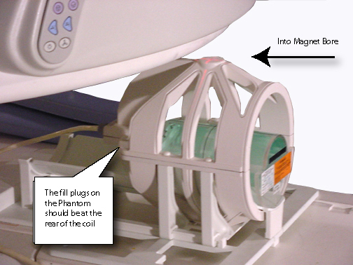
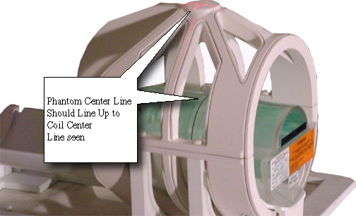

Proprietary to General Electric Company
Direction 5440000, Rev# 5
Signa HDxt Service Methods
Module Version 1.0, Version Date 6/12/08
Proprietary to General Electric Company |
| Required Persons | Preliminary Reqs | Procedure | Finalization |
|---|---|---|---|
| 1 | Not Applicable | 15 mins | Not Applicable |
This section contains a series of tests that allow determination of the proper x-y-z-gradient. Specific symptoms of this type of problem are images that display upside down, left-right reversed, offset scans that move in the opposite directions from those annotated on the images, or some combination of all of these problems. Run this series of tests in the order described to prevent confusing results. Once the correct polarities are established, the Signa system will make properly oriented head and body scans with any imaging data base. Reversal of the polarity of a single gradient causes the right/left or top/bottom reversal of the images from two axes, and reversal of the offsets for one axis. Incorrect polarity of all of the gradients causes the images from all planes to be upside down and backward, and causes the system to scan offset images in the opposite direction from those commanded for all axes.
| NOTE: | The values mentioned in this procedure are related to the physical x, y, and z gradient amplifiers, respectively. The values for setting x-, y-, and z-gradient to obtain 1 gauss/cm, respectfully, are in the system configuration file. |
| Item | Qty | Effectivity | Part# | Manufacturer | |
|---|---|---|---|---|---|
| DQA-III Phantom | 1 | - | 2274999 | - | |
| ||||
| POISON HAZARD! | ||||
| THE PHANTOM CONTAINS NICKEL, A SUSPECT CARCINOGEN. | ||||
| DO NOT INGEST. DISPOSE OF AS A HAZARDOUS WASTE ACCORDING TO STATE AND FEDERAL REGULATIONS. |
At the operator workspace, go to the Scan Desktop.
Click on [New Pt] to enable setting of a new landmark.
Enter the following:
Patient Id: geservice<ENTER>
Patient Name: gradient polarity<ENTER>
Weight (Lb.): 111<ENTER>
Place the DQA-III phantom in the head coil. Position it with the fill plugs up, and toward rear of magnet (see Illustration 1).
Illustration 1: DQA-III PHANTOM POSITIONING

Landmark in the sagittal and axial planes (DQA-III coronal plane is not at isocenter). See Illustration 2 for positioning the phantom in the head coil.
Illustration 2: LANDMARKING DQA-III PHANTOM

At front enclosure on scanner, press LANDMARK, then MOVE TO SCAN.
Set Patient Protocols to [Service].
In the Protocol field, Type o.38.1 (o=Other, 38=protocol number, 1=series number) and <Enter>.
OR
Click on [Other] and select protocol 38 and series 1 from the menu.
Click on [Accept] to load the protocol.
Click on [Save Series].
Click on [Scan] (system auto pre-scans first).
On the scan desktop, click on [Autoview]. When the image displays, verify that the CS appears in the upper right-hand corner (see Illustration 3).
Illustration 3: DQA-III PHANTOM GEOMETRY

| NOTE: | Top/bottom reversal is caused by improper z-gradient polarity (wires crossed between output of Gradient Amplifier and input of Gradient Coil). Left/right reversal is caused by improper y-gradient polarity. |
At the Operator Workspace, click on [New Series].
In the Protocol field, Type o.38.2 (o=Other, 38=protocol number, 2=series number) and <Enter>.
OR
Click on [Other] and select protocol 38 and series 2 from the menu.
Click on [Accept] to load the protocol.
Click on [Save Series].
In the RX MANAGER window, click on [Prepare to Scan].
Click on [Scan] (system auto prescans first).
When the image displays, verify that the A appears in the lower-middle of the image. The image should have the GE logo in the upper right-hand corner (see Illustration 3). If the images appear backwards, go to Software Configuration to adjust the gradient polarity.
| NOTE: | Left/right reversal is caused by incorrect polarity of the x gradient. Top/bottom reversal is caused by improper y-gradient polarity. |
In the RX MANAGER window, click on [End Exam] to exit.
No finalization steps.